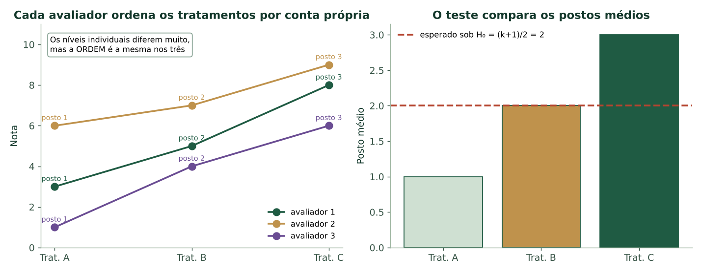
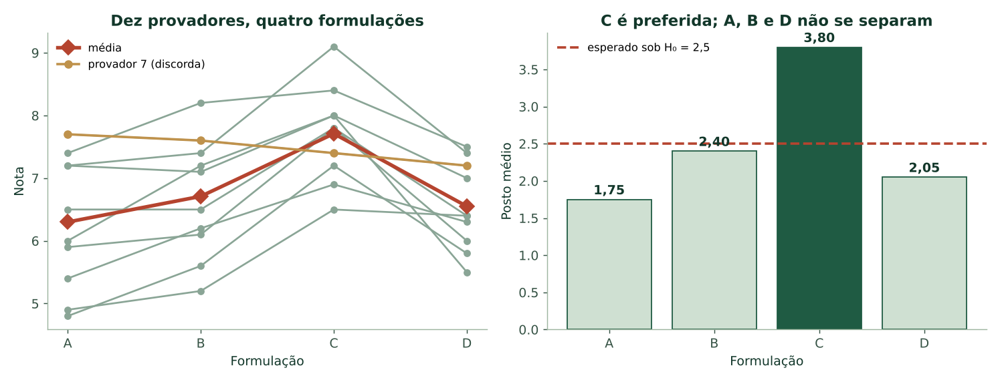

Teste de Friedman
Compara três ou mais tratamentos aplicados às mesmas unidades, usando os postos calculados dentro de cada bloco.
Comece por aqui
Imagine um painel sensorial: dez provadores avaliam quatro formulações de um produto. Alguns são generosos e dão notas altas a tudo; outros são severos. Comparar as notas brutas misturaria dois efeitos — o da formulação e o do provador. O teste de Friedman resolve isso pedindo que cada provador ordene as formulações dentro da sua própria escala, e só então compara essas ordens.
Com duas condições, Friedman e Wilcoxon de postos sinalizados chegam à mesma decisão (na verdade, Friedman com k = 2 equivale ao teste do sinal). Com três ou mais condições medidas nas mesmas unidades, Friedman é a extensão natural.
O que é o teste
Os dados formam uma matriz de \(n\) blocos (os provadores, os pacientes, as parcelas) por \(k\) tratamentos. Dentro de cada bloco, as \(k\) observações recebem postos de 1 a \(k\). Em seguida somam-se os postos de cada tratamento ao longo dos blocos. Se os tratamentos fossem equivalentes, cada um receberia ora o primeiro posto, ora o último, e todas as somas ficariam próximas de \(n(k+1)/2\).

A ANOVA de medidas repetidas também remove o efeito do bloco, mas pela subtração da média do bloco, o que pressupõe que a escala é a mesma para todos. Friedman não pressupõe isso: um provador que use só a faixa de 7 a 9 e outro que use de 2 a 5 contribuem igualmente, porque o que entra na conta é a ordem, não a magnitude.
Pressupostos e como verificá-los
| Pressuposto | Por que importa | Como verificar |
|---|---|---|
| Blocos independentes entre si | A dependência permitida é só dentro do bloco. | Delineamento. |
| Todos os tratamentos em todos os blocos | O delineamento tem de ser completo e balanceado. | table(bloco, tratamento); dados faltantes exigem outro método. |
| Resposta ao menos ordinal dentro de cada bloco | É o que permite ordenar. | Natureza da variável. |
| Ausência de interação bloco × tratamento | Se a ordem se inverte de bloco para bloco, a média dos postos perde sentido. | Gráfico de perfis: as linhas não deveriam se cruzar sistematicamente. |
| Poucos empates dentro dos blocos | Afetam a estatística; o R aplica a correção. | apply(dados, 1, function(x) any(duplicated(x))). |
| Normalidade e esfericidade | Não são exigidas (ver Mauchly). | — |
Se um bloco não tem todos os tratamentos, friedman.test() recusa os dados. As saídas são excluir o bloco inteiro, usar um delineamento em blocos incompletos (teste de Skillings–Mack, em PMCMRplus) ou passar a um modelo misto, que lida com desbalanceamento.
Hipóteses e estatística de teste
Em que:
- \(n\)
- número de blocos
- \(k\)
- número de tratamentos
- \(R_j\)
- soma dos postos do tratamento j ao longo dos blocos
- \(n(k+1)/2\)
- valor esperado de R_j sob a hipótese nula
- \(t_{ij}\)
- tamanho do j-ésimo grupo de empates no bloco i
Exemplo numérico, passo a passo
Com dez provadores e quatro formulações, as somas de postos foram:
| Formulação | A | B | C | D |
|---|---|---|---|---|
| Soma dos postos (R_j) | 17,5 | 24,0 | 38,0 | 20,5 |
| Posto médio | 1,75 | 2,40 | 3,80 | 2,05 |
Sob \(H_0\), cada soma valeria \(10\times5/2=25\). Somando os quadrados, \(\sum R_j^2=2\,746{,}5\), de modo que
Houve dois blocos com um empate cada (os provadores 3 e 5), o que dá \(\sum\sum(t^3-t)=12\). O fator de correção é \(1-12/\left[10\times4\times(4^2-1)\right]=0{,}98\) e
O \(W\) de Kendall completa a leitura: \(W=Q/\left[n(k-1)\right]=15{,}0918/30=0{,}503\), concordância moderada entre os provadores.
Propriedades
- \(0\leq Q\leq n(k-1)\); o máximo ocorre quando todos os blocos produzem exatamente a mesma ordenação.
- O \(W\) de Kendall é \(Q\) reescalado para o intervalo \([0,1]\) e mede a concordância entre os blocos.
- Invariante a transformações monótonas aplicadas dentro de cada bloco.
- Com k = 2, equivale ao teste do sinal aplicado às diferenças.
- Eficiência relativa à ANOVA de medidas repetidas de \(3/\pi\approx0{,}955\) quando k é grande e os dados são normais; cai para \(2/3\) quando k = 2.
- Com n pequeno, o valor-p exato pode ser obtido por enumeração das \((k!)^n\) permutações dentro dos blocos.
Como interpretar os resultados
| Elemento | O que informa | Cuidado |
|---|---|---|
| Q (Friedman chi-squared) | Dispersão das somas de postos. | Já corrigido para empates no R. |
| gl = k − 1 | Tratamentos menos um. | Não depende de n. |
| Valor-p | Evidência de que algum tratamento difere. | Não indica qual. |
| Postos médios | Ordenação dos tratamentos. | A leitura mais direta do resultado. |
| W de Kendall | Concordância entre os blocos. | 0 = nenhuma; 1 = total. 0,1 pequeno; 0,3 médio; 0,5 grande. |
| Comparações múltiplas | Pares que diferem. | Conover tem mais poder; Nemenyi é mais conservador. |
Reporte: número de blocos e de tratamentos, Q, graus de liberdade, valor-p, os postos médios, o W de Kendall e o resultado das comparações múltiplas.
Como executar no R e em Python
Onde executar o código em Python
Não é preciso instalar nada: o Google Colab é um computador na nuvem, gratuito, que executa Python pelo navegador e já traz as bibliotecas usadas aqui (numpy, scipy e matplotlib).
friedman.test() está no pacote stats, já instalado com o R. Aceita uma matriz (blocos nas linhas, tratamentos nas colunas) ou a fórmula resposta ~ tratamento | bloco com os dados em formato longo. As comparações múltiplas vêm de PMCMRplus (frdAllPairsConoverTest, frdAllPairsNemenyiTest) ou de pairwise.wilcox.test() com paired = TRUE. O W de Kendall está em rstatix::friedman_effsize().
friedman.test(notas) # matriz n x k
friedman.test(nota ~ formulacao | provador, data = longo) # formato longo
Exemplo de aplicação
Contexto dos dados
Os dados do exemplo são fictícios e foram criados pelo autor. Dez provadores treinados avaliaram quatro formulações de um produto numa escala de 0 a 10. Cada provador avaliou todas as quatro, o que torna o provador um bloco: a variabilidade entre pessoas é removida do erro experimental.
Código em R
# Teste de Friedman: exemplo completo ----
# Pacotes: stats (base), PMCMRplus ou rstatix (comparações múltiplas)
# install.packages(c("PMCMRplus", "rstatix"))
# 1. Dados: 10 provadores avaliaram 4 formulações de um produto (escala 0 a 10)
# Cada provador avaliou TODAS as formulações: delineamento em blocos.
notas <- matrix(c(4.8, 5.6, 7.2, 5.8,
7.4, 8.2, 8.4, 7.5,
6.5, 6.5, 7.8, 6.0,
7.2, 7.1, 8.0, 7.0,
7.2, 7.4, 9.1, 7.4,
6.0, 7.2, 8.0, 5.5,
7.7, 7.6, 7.4, 7.2,
5.9, 6.1, 7.8, 6.4,
4.9, 5.2, 6.5, 6.4,
5.4, 6.2, 6.9, 6.3),
nrow = 10, byrow = TRUE,
dimnames = list(paste("provador", 1:10), c("A", "B", "C", "D")))
notas
apply(notas, 2, function(x) c(media = mean(x), mediana = median(x)))
# 2. Os postos são calculados DENTRO de cada bloco (cada provador)
postos <- t(apply(notas, 1, rank))
postos
colSums(postos) # R_j: soma dos postos de cada formulação
colMeans(postos) # posto médio; sob H0, todos valeriam (k+1)/2 = 2,5
# 3. O teste
friedman.test(notas)
# 4. Equivalente com os dados em formato longo
longo <- data.frame(nota = as.vector(notas),
formulacao = rep(colnames(notas), each = nrow(notas)),
provador = factor(rep(rownames(notas), times = ncol(notas))))
friedman.test(nota ~ formulacao | provador, data = longo)
# 5. Concordância entre os provadores: W de Kendall
Q <- friedman.test(notas)$statistic
n <- nrow(notas); k <- ncol(notas)
Q / (n * (k - 1))
# equivalente: rstatix::friedman_effsize(longo, nota ~ formulacao | provador)
# 6. Comparações múltiplas
PMCMRplus::frdAllPairsConoverTest(notas, p.adjust.method = "bonferroni")
PMCMRplus::frdAllPairsNemenyiTest(notas)
pairwise.wilcox.test(longo$nota, longo$formulacao, paired = TRUE, p.adjust.method = "bonferroni")
# 7. Comparação com a ANOVA de medidas repetidas
anova_mr <- aov(nota ~ formulacao + Error(provador / formulacao), data = longo)
summary(anova_mr)
shapiro.test(residuals(lm(nota ~ formulacao + provador, data = longo)))
# 8. Gráficos
par(mfrow = c(1, 2))
matplot(t(notas), type = "b", pch = 19, lty = 1, col = "gray60", xaxt = "n",
xlab = "Formulação", ylab = "Nota")
axis(1, at = 1:4, labels = colnames(notas))
lines(colMeans(notas), type = "b", pch = 18, col = "red", lwd = 3)
barplot(colMeans(postos), col = "gray85", xlab = "Formulação", ylab = "Posto médio")
abline(h = (ncol(notas) + 1) / 2, col = "red", lwd = 2, lty = 2)
par(mfrow = c(1, 1))
A mesma análise em Python, com os resultados
Cole o código em um notebook do Google Colab ↗ e execute com Shift+Enter. Os valores abaixo são a saída desse código.
# Bibliotecas: numpy, scipy e matplotlib (já instaladas no Google Colab)
import numpy as np
from scipy import stats
import matplotlib.pyplot as plt
import itertools
# Dados: 10 provadores avaliaram 4 formulações de um produto, em escala de 0 a 10 (dados fictícios).
# Cada provador avaliou TODAS as formulações: é um delineamento em blocos.
notas = np.array([[4.8, 5.6, 7.2, 5.8], [7.4, 8.2, 8.4, 7.5], [6.5, 6.5, 7.8, 6.0],
[7.2, 7.1, 8.0, 7.0], [7.2, 7.4, 9.1, 7.4], [6.0, 7.2, 8.0, 5.5],
[7.7, 7.6, 7.4, 7.2], [5.9, 6.1, 7.8, 6.4], [4.9, 5.2, 6.5, 6.4],
[5.4, 6.2, 6.9, 6.3]])
n, k = notas.shape # n = blocos (provadores), k = tratamentos (formulações)
form = ["A", "B", "C", "D"]
print(f"{n} provadores x {k} formulações")
print("Formulação média mediana")
for j, f in enumerate(form):
print(f" {f} {notas[:, j].mean():.3f} {np.median(notas[:, j]):6.2f}")
# 1. Os postos são calculados DENTRO de cada provador
postos = np.array([stats.rankdata(linha) for linha in notas])
print("\nPostos dentro de cada provador (1 = pior, 4 = melhor):")
for i in range(n):
print(f" provador {i+1:>2}: notas {notas[i]} -> postos {postos[i].astype(int) if np.all(postos[i] == postos[i].astype(int)) else postos[i]}")
Rj = postos.sum(axis=0)
print(f"\nSoma dos postos por formulação: {Rj}")
print(f"Posto médio: {np.round(Rj / n, 3)} | esperado sob H0 = {(k+1)/2:.1f}")
# 2. Estatística de Friedman
Q = 12 / (n * k * (k + 1)) * np.sum(Rj**2) - 3 * n * (k + 1)
print(f"\nQ = 12/({n}x{k}x{k+1}) x {np.sum(Rj**2):.1f} - 3x{n}x{k+1} = {Q:.4f}")
# Correção para empates dentro dos blocos (dois provadores deram notas iguais a duas formulações)
soma_emp = sum(np.sum(c**3 - c) for linha in notas for c in [np.unique(linha, return_counts=True)[1]])
correcao = 1 - soma_emp / (n * k * (k**2 - 1))
print(f"Empates dentro dos blocos: correção = 1 - {soma_emp}/({n}x{k}x({k}²-1)) = {correcao:.5f}")
print(f"Q corrigido = {Q/correcao:.4f} | gl = k - 1 = {k-1} | p-valor = {stats.chi2.sf(Q/correcao, k-1):.6f}")
print("scipy:", stats.friedmanchisquare(*notas.T))
# 3. Coeficiente de concordância de Kendall: o quanto os provadores concordam
W = (Q / correcao) / (n * (k - 1))
print(f"\nW de Kendall = Q / [n(k-1)] = {W:.4f} (0 = nenhuma concordância, 1 = concordância total)")
# 4. Comparações múltiplas: Wilcoxon pareado com ajuste de Bonferroni
pares = list(itertools.combinations(range(k), 2))
print("\nComparações pareadas (Wilcoxon, ajuste de Bonferroni):")
for i, j in pares:
p = stats.wilcoxon(notas[:, i], notas[:, j]).pvalue
pa = min(1, p * len(pares))
print(f" {form[i]} vs {form[j]}: diferença mediana = {np.median(notas[:, i] - notas[:, j]):>5.2f} "
f"| p = {p:.4f} | ajustado = {pa:.4f}{' *' if pa < 0.05 else ''}")
# 5. Diferença mínima significativa entre postos médios (Conover)
A = np.sum(postos**2); B = np.sum(Rj**2) / n
t_crit = stats.t.ppf(0.975, (n - 1) * (k - 1))
dms = t_crit * np.sqrt(2 * n * (A - B) / ((n - 1) * (k - 1)))
print(f"\nDiferença mínima entre SOMAS de postos (Conover, 5%) = {dms:.4f}")
for i, j in pares:
d = abs(Rj[i] - Rj[j])
print(f" |R{form[i]} - R{form[j]}| = {d:.1f}{' > DMS: difere' if d > dms else ''}")
# 6. Comparação com a ANOVA de medidas repetidas
media_geral = notas.mean()
SQ_trat = n * np.sum((notas.mean(axis=0) - media_geral)**2)
SQ_bloco = k * np.sum((notas.mean(axis=1) - media_geral)**2)
SQ_res = np.sum((notas - media_geral)**2) - SQ_trat - SQ_bloco
F = (SQ_trat / (k - 1)) / (SQ_res / ((n - 1) * (k - 1)))
print(f"\nANOVA de medidas repetidas: F({k-1}, {(n-1)*(k-1)}) = {F:.4f}, p-valor = {stats.f.sf(F, k-1, (n-1)*(k-1)):.6f}")
print(f"Shapiro-Wilk dos resíduos: p-valor = {stats.shapiro((notas - notas.mean(axis=0) - notas.mean(axis=1)[:, None] + media_geral).ravel()).pvalue:.4f}")
# 7. Gráficos
fig, ax = plt.subplots(1, 2, figsize=(11, 4))
for i in range(n): ax[0].plot(range(1, k + 1), notas[i], marker="o", color="gray", alpha=0.6)
ax[0].plot(range(1, k + 1), notas.mean(axis=0), marker="o", color="red", lw=3)
ax[0].set_xticks(range(1, k + 1)); ax[0].set_xticklabels(form); ax[0].set_xlabel("Formulação"); ax[0].set_ylabel("Nota")
ax[1].bar(form, Rj / n, color="lightgray", edgecolor="gray")
ax[1].axhline((k + 1) / 2, color="red", ls="--"); ax[1].set_ylabel("Posto médio"); ax[1].set_xlabel("Formulação")
plt.show()
Resultados da execução
10 provadores x 4 formulações
Formulação média mediana
A 6.300 6.25
B 6.710 6.80
C 7.710 7.80
D 6.550 6.40
Postos dentro de cada provador (1 = pior, 4 = melhor):
provador 1: notas [4.8 5.6 7.2 5.8] -> postos [1 2 4 3]
provador 2: notas [7.4 8.2 8.4 7.5] -> postos [1 3 4 2]
provador 3: notas [6.5 6.5 7.8 6. ] -> postos [2.5 2.5 4. 1. ]
provador 4: notas [7.2 7.1 8. 7. ] -> postos [3 2 4 1]
provador 5: notas [7.2 7.4 9.1 7.4] -> postos [1. 2.5 4. 2.5]
provador 6: notas [6. 7.2 8. 5.5] -> postos [2 3 4 1]
provador 7: notas [7.7 7.6 7.4 7.2] -> postos [4 3 2 1]
provador 8: notas [5.9 6.1 7.8 6.4] -> postos [1 2 4 3]
provador 9: notas [4.9 5.2 6.5 6.4] -> postos [1 2 4 3]
provador 10: notas [5.4 6.2 6.9 6.3] -> postos [1 2 4 3]
Soma dos postos por formulação: [17.5 24. 38. 20.5]
Posto médio: [1.75 2.4 3.8 2.05] | esperado sob H0 = 2.5
Q = 12/(10x4x5) x 2746.5 - 3x10x5 = 14.7900
Empates dentro dos blocos: correção = 1 - 12/(10x4x(4²-1)) = 0.98000
Q corrigido = 15.0918 | gl = k - 1 = 3 | p-valor = 0.001740
scipy: FriedmanchisquareResult(statistic=np.float64(15.091836734693869), pvalue=np.float64(0.0017398263486403326))
W de Kendall = Q / [n(k-1)] = 0.5031 (0 = nenhuma concordância, 1 = concordância total)
Comparações pareadas (Wilcoxon, ajuste de Bonferroni):
A vs B: diferença mediana = -0.25 | p = 0.0195 | ajustado = 0.1172
A vs C: diferença mediana = -1.55 | p = 0.0039 | ajustado = 0.0234 *
A vs D: diferença mediana = -0.15 | p = 0.4199 | ajustado = 1.0000
B vs C: diferença mediana = -1.10 | p = 0.0039 | ajustado = 0.0234 *
B vs D: diferença mediana = 0.05 | p = 0.5156 | ajustado = 1.0000
C vs D: diferença mediana = 1.20 | p = 0.0020 | ajustado = 0.0117 *
Diferença mínima entre SOMAS de postos (Conover, 5%) = 8.7141
|RA - RB| = 6.5
|RA - RC| = 20.5 > DMS: difere
|RA - RD| = 3.0
|RB - RC| = 14.0 > DMS: difere
|RB - RD| = 3.5
|RC - RD| = 17.5 > DMS: difere
ANOVA de medidas repetidas: F(3, 27) = 16.1043, p-valor = 0.000003
Shapiro-Wilk dos resíduos: p-valor = 0.6548
| Provador | A | B | C | D |
|---|---|---|---|---|
| 1 | 4,8 | 5,6 | 7,2 | 5,8 |
| 2 | 7,4 | 8,2 | 8,4 | 7,5 |
| 3 | 6,5 | 6,5 | 7,8 | 6,0 |
| 4 | 7,2 | 7,1 | 8,0 | 7,0 |
| 5 | 7,2 | 7,4 | 9,1 | 7,4 |
| 6 | 6,0 | 7,2 | 8,0 | 5,5 |
| 7 | 7,7 | 7,6 | 7,4 | 7,2 |
| 8 | 5,9 | 6,1 | 7,8 | 6,4 |
| 9 | 4,9 | 5,2 | 6,5 | 6,4 |
| 10 | 5,4 | 6,2 | 6,9 | 6,3 |
| Média | 6,30 | 6,71 | 7,71 | 6,55 |
| Elemento | Valor | Leitura |
|---|---|---|
| Q sem correção | 14,790 | Antes de tratar os empates. |
| Correção para empates | 0,98000 | Dois blocos com um empate cada. |
| Q corrigido | 15,0918 | Com gl = 3. |
| Valor-p | 0,00174 | Evidência forte de diferença entre formulações. |
| Postos médios | 1,75 / 2,40 / 3,80 / 2,05 | A / B / C / D; esperado = 2,5. |
| W de Kendall | 0,503 | Concordância moderada entre os provadores. |
| DMS de Conover (5%) | 8,714 | Diferença mínima entre somas de postos. |
| Wilcoxon pareado + Bonferroni | C ≠ A, B e D | A, B e D não se separam. |
| ANOVA de medidas repetidas | F(3; 27) = 16,10; p = 0,000003 | Concorda com a conclusão. |
| Shapiro–Wilk dos resíduos | p = 0,655 | A ANOVA também seria defensável aqui. |
Leitura: as quatro formulações não são equivalentes. A formulação C teve posto médio 3,80, muito acima do valor esperado de 2,5, e foi colocada em primeiro lugar por nove dos dez provadores. As comparações de Conover confirmam: as diferenças |R_C − R_A| = 20,5, |R_C − R_B| = 14,0 e |R_C − R_D| = 17,5 superam a diferença mínima de 8,714, enquanto nenhuma comparação entre A, B e D chega perto disso.
Dois detalhes merecem atenção. O primeiro é o provador 7, destacado no gráfico: ele foi o único a não preferir C, e sua discordância é justamente o que impede o W de Kendall de subir além de 0,503. O segundo é que, aqui, a ANOVA de medidas repetidas teria funcionado — os resíduos passam no Shapiro–Wilk — e chega à mesma conclusão com um valor-p menor. Quando os dois métodos são aplicáveis, a ANOVA tende a ter mais poder; a vantagem do Friedman aparece quando a escala é ordinal, quando há valores extremos ou quando os provadores usam faixas de nota muito diferentes.
Erros comuns
| Erro | Como evitar |
|---|---|
| Calcular os postos na coluna inteira | Os postos vêm de dentro de cada bloco; é isso que remove o efeito do bloco. |
| Usar com grupos independentes | Para grupos independentes, use Kruskal–Wallis. |
| Passar dados longos sem indicar o bloco | A sintaxe correta é resposta ~ tratamento | bloco. |
| Parar no valor-p global | Faça as comparações múltiplas para saber quais tratamentos diferem. |
| Aplicar Wilcoxon par a par sem ajuste | Com quatro tratamentos há seis comparações. |
| Ignorar blocos incompletos | friedman.test() exige delineamento completo; use Skillings–Mack ou um modelo misto. |
| Interpretar W de Kendall como tamanho do efeito do tratamento | W mede a concordância entre os blocos, não a magnitude da diferença. |
| Esquecer que a ordem pode se inverter entre blocos | Examine o gráfico de perfis antes de confiar na média dos postos. |
Alternativas e fluxo de trabalho
| Procedimento | Quando preferir |
|---|---|
| ANOVA de medidas repetidas | Resíduos normais e esfericidade atendida; interesse nas médias. |
| ANOVA mista e modelos mistos | Blocos incompletos, covariáveis ou estrutura de correlação a modelar. |
| Modelo de odds proporcionais com efeito aleatório | Resposta ordinal com poucas categorias. |
| Teste de Skillings–Mack | Blocos incompletos, com dados faltantes. |
| Teste Q de Cochran | Resposta binária em blocos. |
| Wilcoxon de postos sinalizados | Apenas duas condições. |
| Teste de permutação dentro de blocos | Amostra pequena, com interesse nas médias originais. |
ANOVA alinhada por postos (ART) | Delineamento fatorial com resposta ordinal. |
- Confirme que o delineamento é em blocos completos.
- Faça o gráfico de perfis e verifique se as ordens são consistentes entre blocos.
- Conte os empates dentro dos blocos.
- Aplique o teste e relate Q, gl e valor-p.
- Reporte o W de Kendall como medida de concordância.
- Se rejeitar, faça as comparações múltiplas com ajuste.
- Compare, quando os pressupostos permitirem, com a ANOVA de medidas repetidas.
Referências desta ficha
- FRIEDMAN, Milton. The use of ranks to avoid the assumption of normality implicit in the analysis of variance. Journal of the American Statistical Association, v. 32, n. 200, p. 675-701, 1937.
- FRIEDMAN, Milton. A comparison of alternative tests of significance for the problem of m rankings. The Annals of Mathematical Statistics, v. 11, n. 1, p. 86-92, 1940.
- KENDALL, Maurice G.; BABINGTON SMITH, B. The problem of m rankings. The Annals of Mathematical Statistics, v. 10, n. 3, p. 275-287, 1939.
- HOLLANDER, Myles; WOLFE, Douglas A.; CHICKEN, Eric. Nonparametric statistical methods. 3. ed. Hoboken: Wiley, 2014.
- CONOVER, William J. Practical nonparametric statistics. 3. ed. New York: Wiley, 1999.
- DEMŠAR, Janez. Statistical comparisons of classifiers over multiple data sets. Journal of Machine Learning Research, v. 7, p. 1-30, 2006. (Uso do teste de Friedman com Nemenyi.)
- R CORE TEAM. R: a language and environment for statistical computing. Vienna: R Foundation for Statistical Computing, 2026. Disponível em: https://www.r-project.org/. (Funções
friedman.test,pairwise.wilcox.testeaov, pacotestats.) - POHLERT, Thorsten. PMCMRplus: calculate pairwise multiple comparisons of mean rank sums extended. R package. Disponível em: https://CRAN.R-project.org/package=PMCMRplus. (Funções
frdAllPairsConoverTestefrdAllPairsNemenyiTest.) - KASSAMBARA, Alboukadel. rstatix: pipe-friendly framework for basic statistical tests. R package. Disponível em: https://CRAN.R-project.org/package=rstatix. (Função
friedman_effsize.) - POSIT TEAM. RStudio: integrated development environment for R. Boston: Posit Software, PBC. Disponível em: https://posit.co/download/rstudio-desktop/.
- VIRTANEN, Pauli et al. SciPy 1.0: fundamental algorithms for scientific computing in Python. Nature Methods, v. 17, p. 261-272, 2020. DOI: 10.1038/s41592-019-0686-2. (Funções do módulo
scipy.stats.) - HARRIS, Charles R. et al. Array programming with NumPy. Nature, v. 585, p. 357-362, 2020. DOI: 10.1038/s41586-020-2649-2.
- HUNTER, John D. Matplotlib: a 2D graphics environment. Computing in Science & Engineering, v. 9, n. 3, p. 90-95, 2007.
- GOOGLE. Google Colaboratory. Disponível em: https://colab.research.google.com/.
- As figuras desta ficha foram elaboradas pelo autor.

Prof. Dr. Cássius Henrique Xavier Oliveira
Professor · ICTIN/UFLA · Estatística, Confiabilidade e Ciência de Dados.
Conheça minha trajetória e projetos →